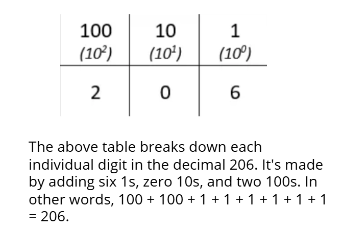
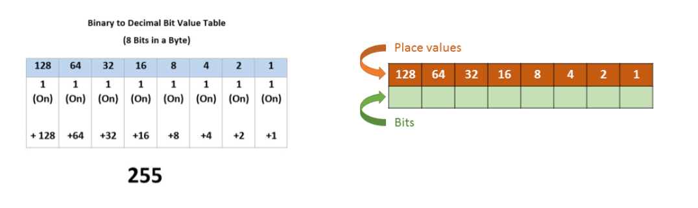
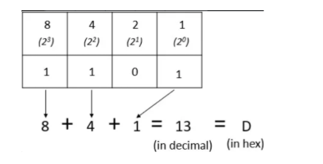
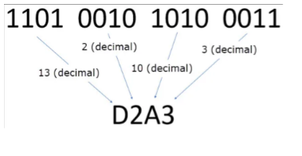

Digital data is information (text, numbers, pictures, sound) stored as binary: long runs of 1s and 0s. Inside the hardware, each 1 or 0 is a physical state, such as a voltage that is on or off, a magnetic spot on a disk, or a charge in a flash memory cell.
| Term | Meaning |
|---|---|
| Bit | The smallest unit of data: a single 1 or 0. |
| Nibble | 4 bits. One hexadecimal digit stands for exactly one nibble. |
| Byte | 8 bits. One byte holds a value from 0 (00000000) to 255 (11111111), which is 256 possible values. |
| Kilobyte (KB) | 1,000 bytes. |
| Megabyte (MB) | 1,000 kilobytes (one million bytes). |
| Gigabyte (GB) | 1,000 megabytes (one billion bytes). |
| Terabyte (TB) | 1,000 gigabytes (one trillion bytes). |
Because computers count in powers of 2, there is a second set of units that goes up by 1,024 instead of 1,000: the kibibyte (KiB, 1,024 bytes), mebibyte (MiB, 1,024 KiB), gibibyte (GiB) and tebibyte (TiB).
Drive makers label drives in 1,000-based units. Windows measures in 1,024-based units but still writes "GB". So a drive sold as 1 TB (1,000,000,000,000 bytes) shows as about 931 GB in Windows. No space is missing; it is the same number of bytes counted two ways. Expect customers to ask about this.
Network and internet speeds are measured in bits per second: Mbps (megabits) and Gbps (gigabits), with a small b. File sizes and storage are measured in bytes, with a capital B (MB, GB). Divide by 8 to go from bits to bytes: a 100 Mbps connection moves at most about 12.5 MB of file data per second. The amount of data actually moved per second is called throughput.
A processor runs on a clock that ticks at a fixed rate. Each tick is one clock cycle, and speed is measured in hertz (cycles per second). 1 megahertz (MHz) is a million cycles per second; 1 gigahertz (GHz) is a billion. Modern CPUs run at several GHz; MHz is still used for things like RAM speed.
A customer bought a "2 TB" external drive. Windows shows it as about 1.8 TB and they think it is faulty. What do you tell them?
Nothing is missing. 2,000,000,000,000 bytes divided by 1,024 four times is about 1.8 TiB, which Windows labels "TB".
Your internet plan is 400 Mbps. About how fast can a large file download, at best?
Mbps is megabits. 400 divided by 8 is 50 megabytes per second, before any overhead.
People count in decimal (base 10). Computers store everything in binary (base 2), because each digit only has to be on or off. Hexadecimal (base 16, "hex") is a short way for people to write binary: one hex digit stands for exactly four bits. Don't worry if this feels like a lot at first; the converter below makes it click.
Decimal uses ten digits, 0 to 9. Each place is worth ten times the place to its right: ones (100), tens (101), hundreds (102). The number 206 is two hundreds, zero tens and six ones.

Binary uses only two digits, 0 and 1. It works the same way as decimal, but each place is worth twice the place to its right: 1, 2, 4, 8, 16, 32, 64, 128. A byte has eight places, so the biggest byte is all eight added together: 128 + 64 + 32 + 16 + 8 + 4 + 2 + 1 = 255.

Counting in binary. 0, then 1. Two is 10: there is no digit "2", so the ones place goes back to 0 and a 1 moves into the twos place, just like 9 rolls over to 10 in decimal. Three is 11 (2 + 1), four is 100, five is 101, and so on up to 255.
Binary to decimal. Add the place values wherever there is a 1. For 11001110:
| Place value | 128 | 64 | 32 | 16 | 8 | 4 | 2 | 1 |
|---|---|---|---|---|---|---|---|---|
| Bit | 1 | 1 | 0 | 0 | 1 | 1 | 1 | 0 |
128 + 64 + 8 + 4 + 2 = 206.
Decimal to binary. Work from the biggest place value down. For 75: 64 fits (75 − 64 = 11), 32 and 16 do not, 8 fits (11 − 8 = 3), 4 does not, 2 fits (3 − 2 = 1), 1 fits. So 75 is 01001011.
Click a bit to switch it on or off. The decimal and hex values update as you go. Then press "Practice" and set the bits to match the number shown.
Video: GCSE GURU, "How to convert binary to decimal".
Hex uses sixteen digits: 0 to 9, then A (10), B (11), C (12), D (13), E (14) and F (15). Each place is worth sixteen times the place to its right: ones, then sixteens, then 256s.
Counting in hex. After F (15) the ones place rolls back to 0 and the sixteens place goes up by one, so hex 10 is decimal 16. Then 11 (17), 12 (18) … 19 (25), 1A (26) … 1F (31), then 20 (32). Hex FF is 15 × 16 + 15 = 255, the biggest value in one byte.
| Decimal | Binary | Hex | Decimal | Binary | Hex |
|---|---|---|---|---|---|
| 0 | 0000 | 0 | 8 | 1000 | 8 |
| 1 | 0001 | 1 | 9 | 1001 | 9 |
| 2 | 0010 | 2 | 10 | 1010 | A |
| 3 | 0011 | 3 | 11 | 1011 | B |
| 4 | 0100 | 4 | 12 | 1100 | C |
| 5 | 0101 | 5 | 13 | 1101 | D |
| 6 | 0110 | 6 | 14 | 1110 | E |
| 7 | 0111 | 7 | 15 | 1111 | F |
Split the binary number into groups of four bits (nibbles), starting from the right. Turn each group into its decimal value, then into its hex digit. For one nibble, 1101 is 8 + 4 + 1 = 13, which is D:

A longer number works the same way. 1101001010100011 splits into 1101 · 0010 · 1010 · 0011, which is 13 · 2 · 10 · 3, which is D2A3:

To go from hex back to binary, reverse it: write each hex digit as four bits. 3F is 0011 1111.
Multiply each digit by its place value and add. 2F is 2 × 16 + 15 = 47. E1 is 14 × 16 + 1 = 225.
3C-52-82-1A-F0-9B (six bytes; also written with colons).2001:0db8::1.#FF0000 (red).0x0000007B. The 0x in front means "this is hex".What is hex 2F in decimal?
2 sixteens (32) plus F (15) is 47.
What is the binary number 1011 0110 in hex?
1011 is 11, which is B; 0110 is 6. Read left to right: B6.
Video: GCSE GURU, "How to convert hexadecimal to decimal".
Video: GCSE GURU, "How to convert hexadecimal to binary".
206 and read the HEX and BIN lines. Click HEX, type FF, and check that DEC shows 255.getmac and press Enter. Each physical address is six bytes written in hex.